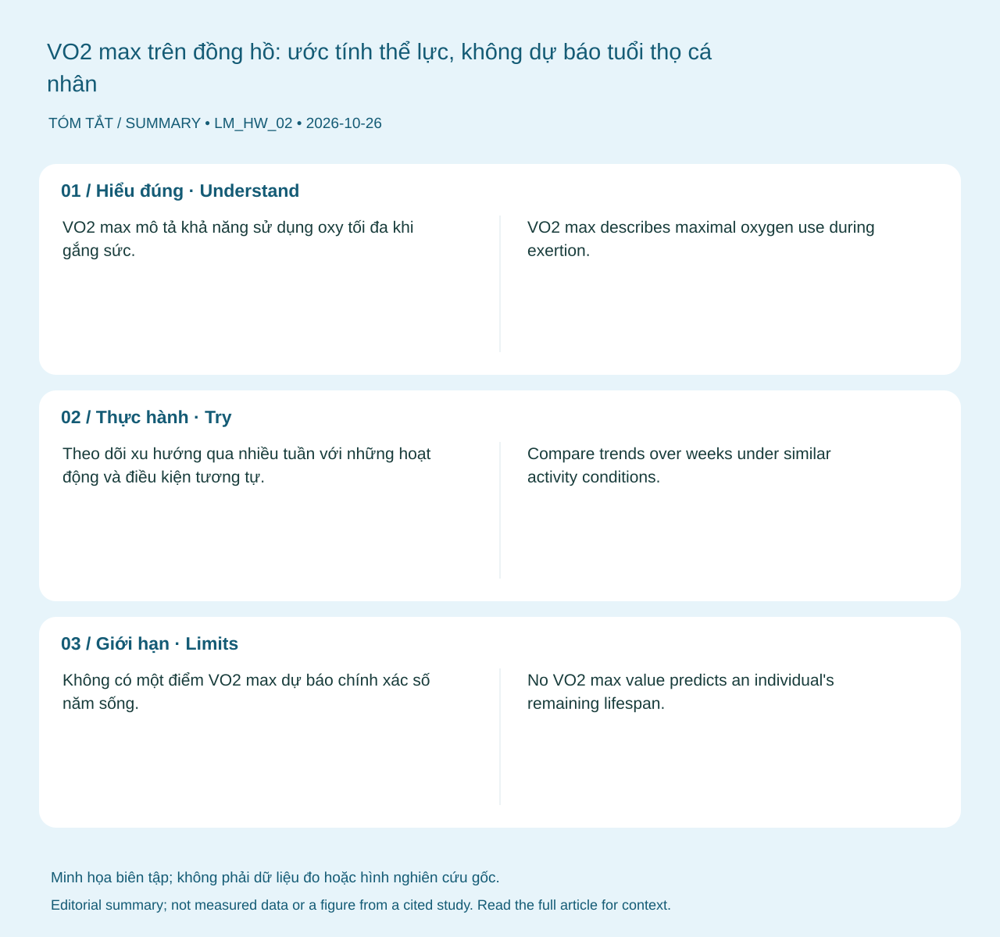

Hiểu đúng
VO2 max mô tả khả năng sử dụng oxy tối đa khi gắng sức. Thể lực tim phổi có liên hệ quan trọng với sức khỏe, nhưng giá trị trên đồng hồ là ước tính theo thuật toán và điều kiện hoạt động, khác với đo trao đổi khí trong kiểm tra gắng sức. 1 2

Bạn có thể làm gì?
Theo dõi xu hướng qua nhiều tuần với những hoạt động và điều kiện tương tự. Xây dựng thói quen vận động đều, tăng tải từ từ và theo dõi cả việc bạn đi nhanh hoặc lên cầu thang dễ hơn.
Giới hạn cần biết
Không có một điểm VO2 max dự báo chính xác số năm sống. Thay đổi thuật toán, nhiệt độ, cân nặng nhập sai và dữ liệu nhịp tim có thể ảnh hưởng ước tính.
Khi nào cần tư vấn?
Khó thở mới xuất hiện hoặc khả năng vận động giảm rõ cần được khám, kể cả khi đồng hồ vẫn báo thể lực tốt.
Nguồn và phạm vi hỗ trợ
-
Ross et al. (2016) — Importance of Assessing Cardiorespiratory Fitness in Clinical Practice — AHA scientific statement. Hỗ trợ: Thể lực tim phổi và đánh giá nguy cơ sức khỏe.
-
WHO — Physical activity — Public health guideline summary. Hỗ trợ: Khuyến nghị vận động theo nhóm đối tượng.
Cập nhật nội dung và nguồn: 2026-10-26. Nội dung giáo dục; chưa có xác nhận duyệt bởi bác sĩ.